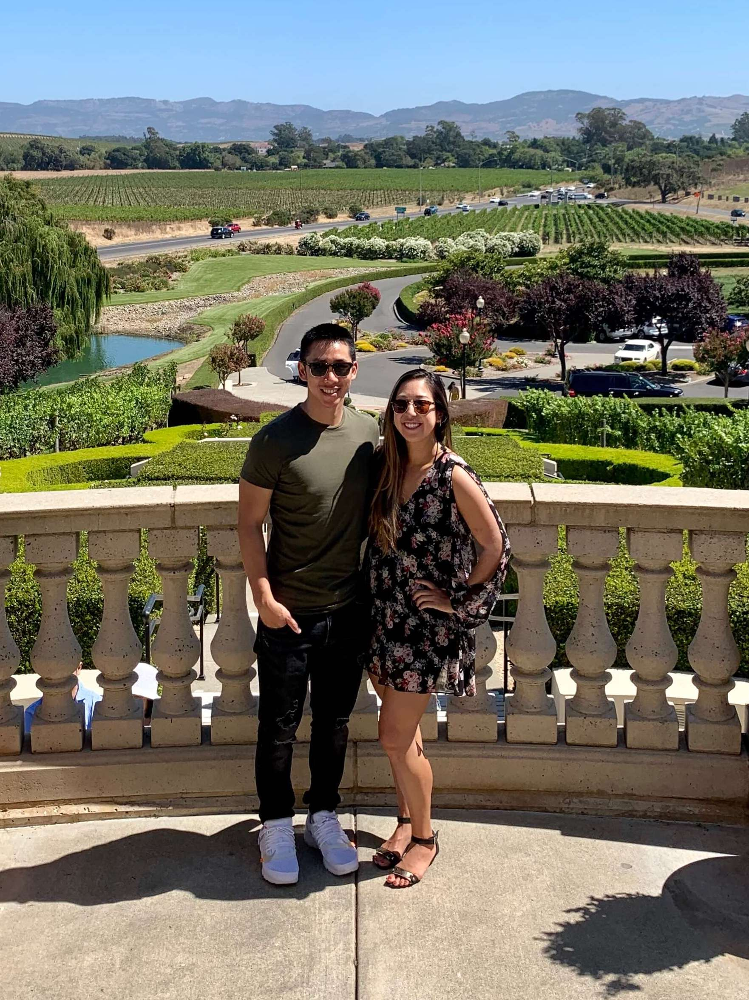
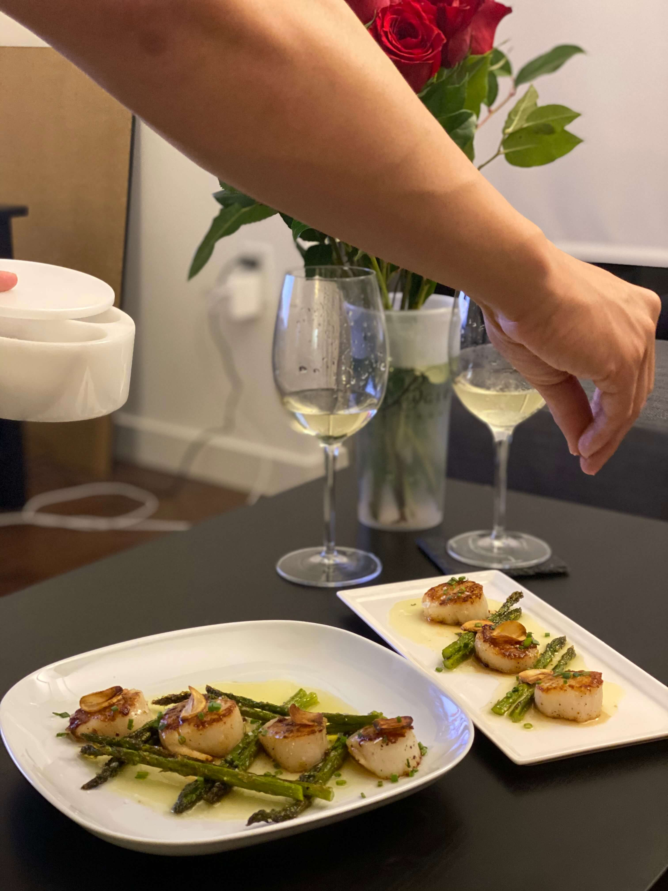
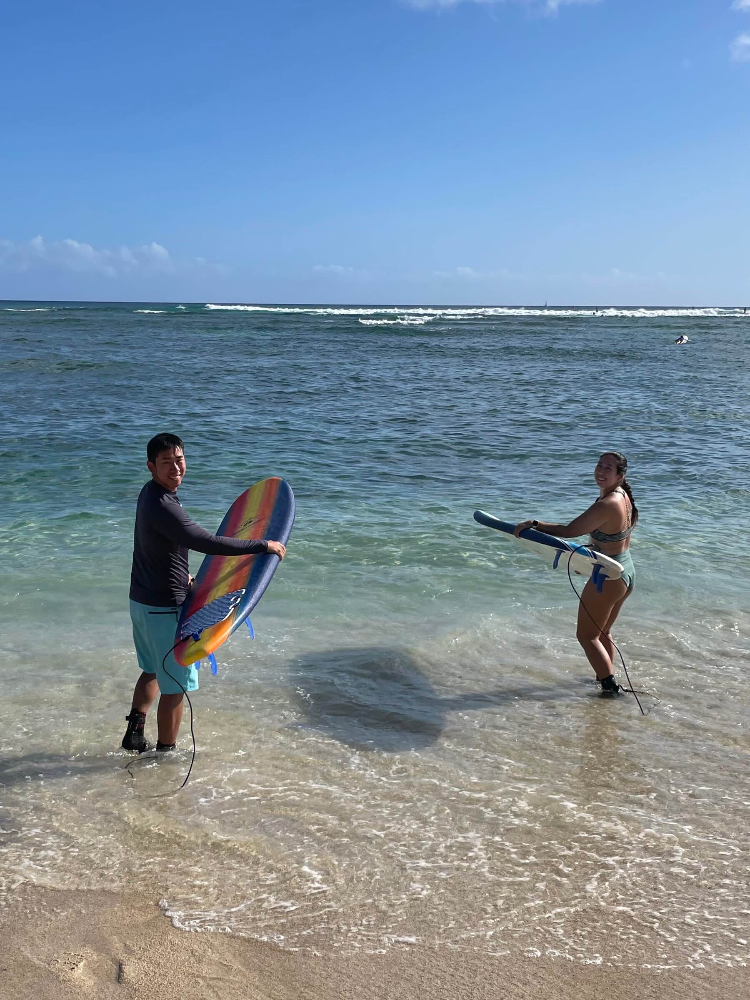
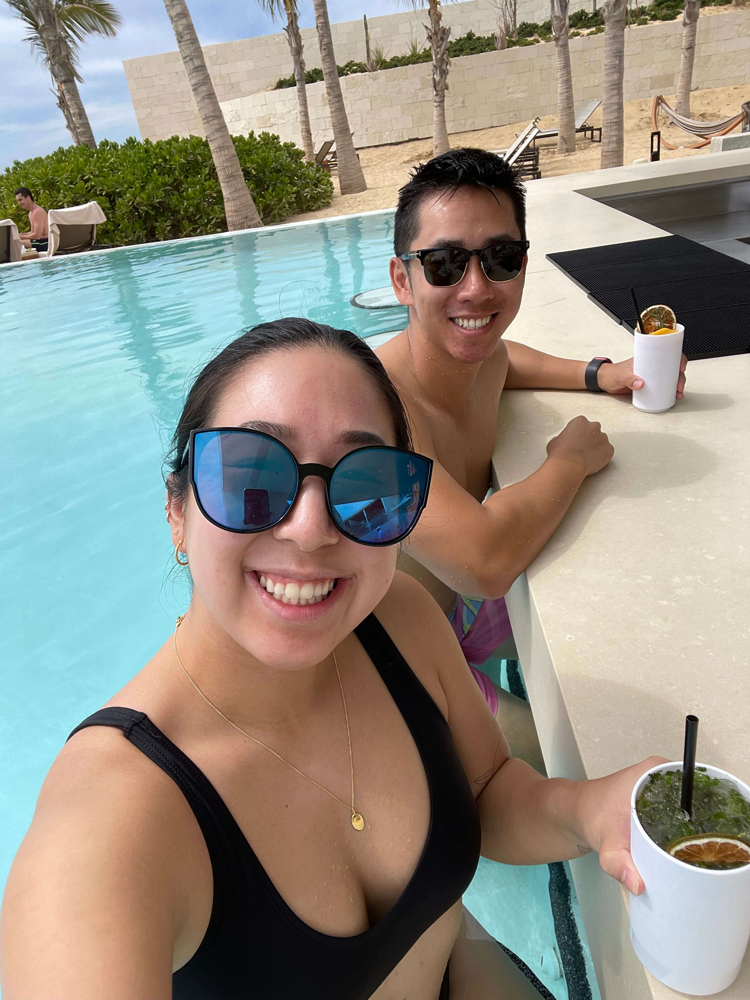
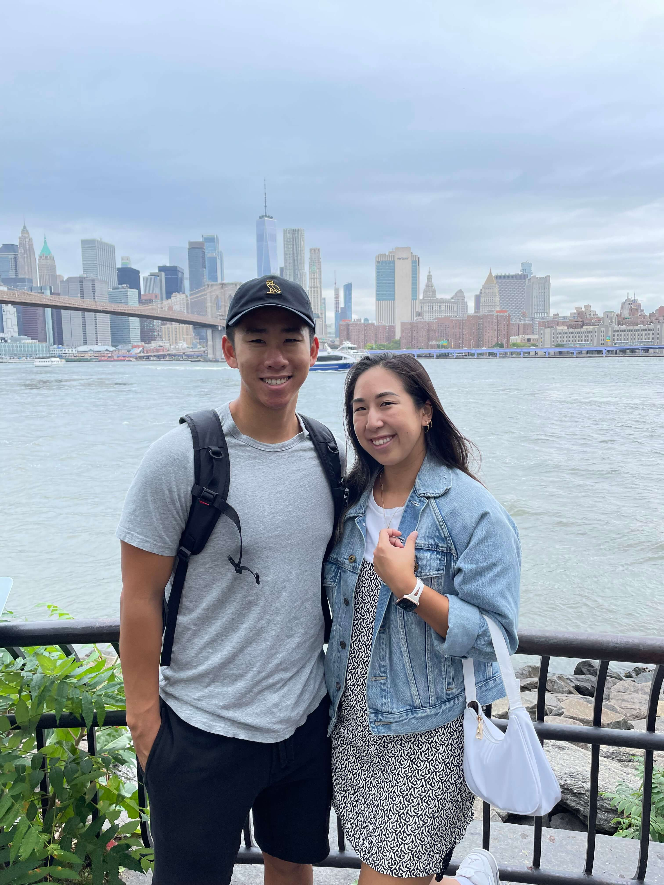
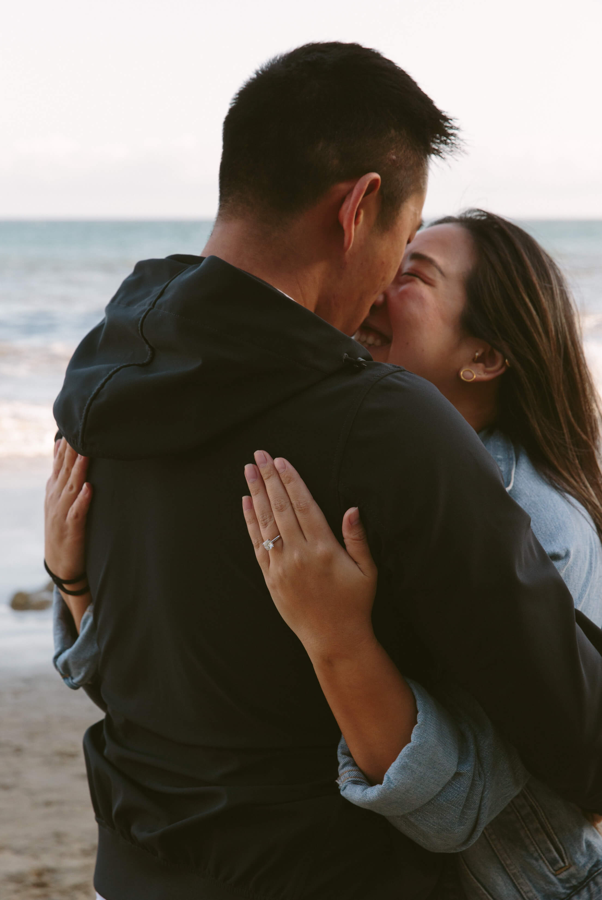

our story.
MAY 2019 | SAN FRANCISCO, CA
Kevin and Michelle both swiped right and it was a match! After some (not so) witty text banter, they had their first date at Blackbird, which soon became their favorite go-to neighborhood bar.
AUG 2019 | NAPA, CA
After a day of wine tasting in Napa Valley and walking through beautiful vineyards, Kevin asked Michelle to be his girlfriend.
FEB 2020 | SAN FRANCISCO, CA
For their first Valentine’s Day together, Chef Kevin made a 4-course homemade meal for Michelle, which has become their annual tradition. Little did they know, COVID was about to bring about shelter-in-place and many more homemade meals instead of eating out.
JAN 2021 | HONOLULU, HI
With serious cabin fever and COVID restrictions still in place, Michelle and Kevin decided to pack up their things and head to Hawaii for a few months where they could enjoy surfing and hiking in the outdoors. Work from home became work from Hawaii.
FEB 2022 | LOS CABOS, MX
Michelle booked a trip to Cabo as a late anniversary gift for Kevin. They stayed at Nobu Hotel and fell in love with the property. This trip was the reason they chose Nobu as their wedding venue!
MAR 2022 | SAN FRANCISCO, CA
After over 6 years in the Bay Area and surviving the pandemic together, Michelle and Kevin decided to move to New York and start a new chapter. But Kevin had one more thing up his sleeve...
APR 16, 2022 | MALIBU, CA
Kevin popped the question at El Matador Beach during golden hour after months of planning in secret. A local beachgoer pretended to help with taking a photo, but was actually a professional photographer in disguise!